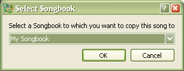

3.3 Coping Songs
SoftProjector allow to copy an existing song into a new songbook or an other existing songbook.
To copy a song:
Shortcut: Crtl+C

If no
songbook already exits that you would like to copy the song into, select to
add a new songbook. Detail on adding new songbook.
After selecting a songbook, a
song edit dialog will come up. Edit the song if
needed and click "Save"